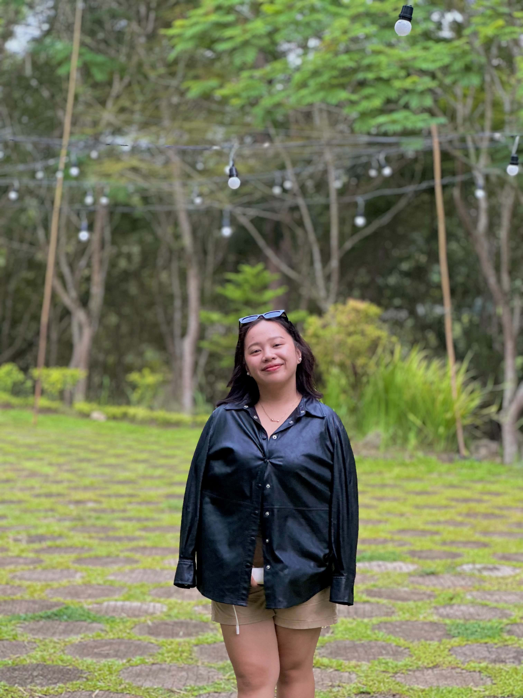

Bachelor of Science in
Information Technology
Davao del Norte State College
4th Year BSIT 4BA LITTLE INTRODUCTION
I’m Regine Kris Cadiao, a fourth-year Information Technology student exploring the space where technology and creativity meet.

A FACE BEHIND THE CREATIVITY01 / GET TO KNOW ME
Based in Santo Tomas, Davao del Norte, Philippines, I’m pursuing a degree in Information Technology. My creative toolkit includes Canva and CapCut, bringing together an interest in visual design and video editing.
02 / THE JOURNEY SO FAR
Davao del Norte State College
4th Year BSIT 4BSalvacion National High School
03 / MY CREATIVE SIDE
A little imagination. The right tools. Something uniquely mine.
Visual design & creative layouts
Video editing & visual storytelling
04 / LET’S CONNECT
Find me on GitHub and follow my learning journey.